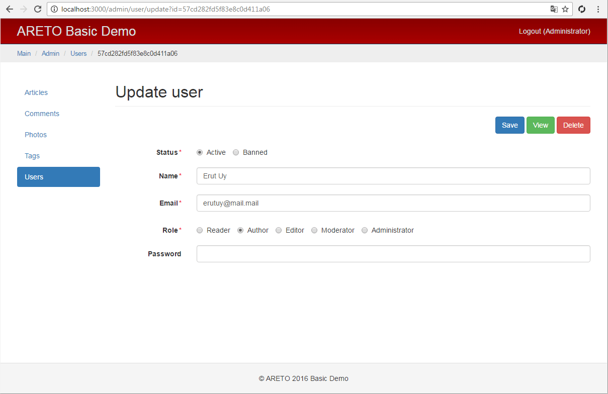

Admin user controller
The UserController class is responsible for actions of a user model.

module/admin/controller/UserController.js

The actionIndex method lists all users sorted by ID, name, email or roles.
In addition, there is a search by user data.
module/admin/controller/UserController.js